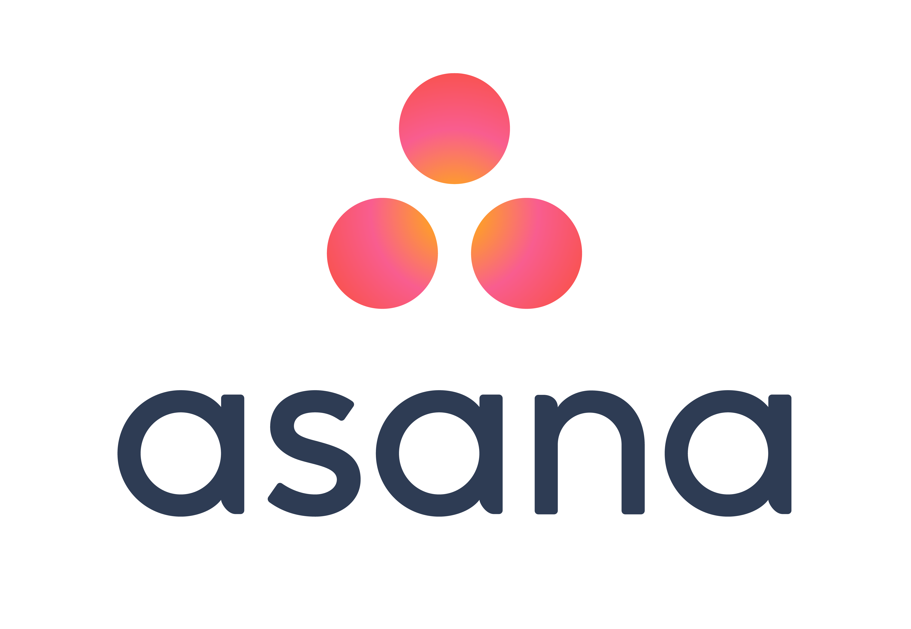
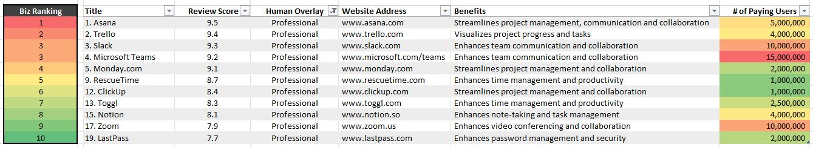

APP WARS
The 5 Best Apps for
Business Productivity in 2022
Research by Adam Johnstone in conjunction with the "Yoda" of AI
Jasper.ai & OpenAI's playground 'article writing' feature used, with multiple re-runs to get consistent data.
 |
Streamlines project management, communication and collaboration. Integrates with everything, with great email interoperability and GANTT chart extensions. |
|
Visualizes project progress and tasks, it utilises a Kanban approach (board where tasks move from backlog to in progress & done). Maximum integrations and run now by Atlassian. |
 |
Enhances team communication and collaboration with real-time chat. Slack is popular with software developer teams / MS Teams more in professional environments to decrease the volume of "chat based email" down by up to 80%. |
|
Streamlines project management and collaboration. A great workflow tool that gives a quick snapshot of the status of each project or inner workflow to management and the information workers. |
|
Time management tool to track and manage time spent on tasks while promoting focused and efficient work. Syncs with your calendar helps block distractions. |
Let's deep dive into each tool to gather more insights...
